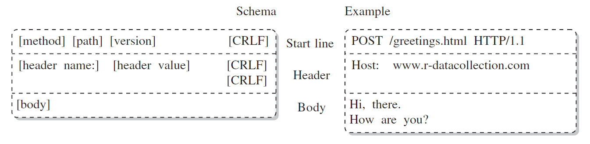
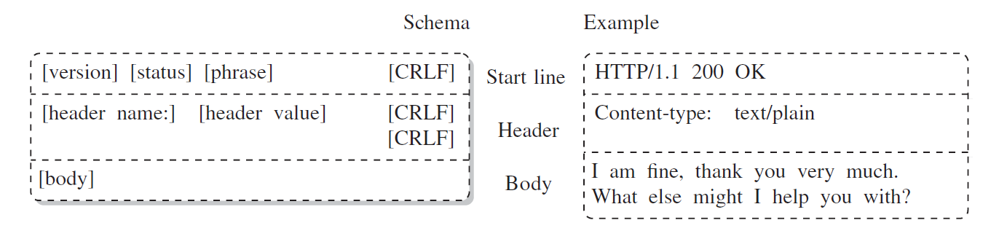

1. Introduction
- HTTP stands for Hypertext Transfer Protocol
- HTTP is an application-level protocol for distributed, collaborative, hypermedia information systems
- HTTP is the foundation of data communication for the World Wide Web, where hypertext documents include hyperlinks to other resources
- HTTP is a generic and stateless protocol which can be used for other purposes as well using extensions of its request methods, error codes, and headers
- HTTP is a TCP/IP based communication protocol, that is used to deliver data (HTML files, image files, query results, etc.) on the World Wide Web
- The Internet protocol suite (IPS), which is commonly known as TCP/IP, is the conceptual model and set of communications protocols used in the Internet and similar computer networks
- TCP stands for Transmission Control Protocol and IP stands for Internet Protocol
- HTTP functions as a request–response protocol in the client–server computing model
- In a client-server model a client opens a connection to make a request, then waits until it receives a response
Example
A web browser may be the client and an application running on a computer hosting a website may be the server. The client submits an HTTP request message to the server. The server, which provides resources such as HTML files and other content, or performs other functions on behalf of the client, returns a response message to the client. The response contains completion status information about the request and may also contain requested content in its message body.
A web browser is an example of a user agent (UA). Other types of user agent include the indexing software used by search providers (web crawlers), voice browsers, mobile apps, and other software that accesses, consumes, or displays web content.
2. HTTP Basic Features
- HTTP is connectionless: The HTTP client, i.e., a browser initiates an HTTP request and after a request is made, the client waits for the response. The server processes the request and sends a response back after which client disconnect the connection. So client and server knows about each other during current request and response only. Further requests are made on new connection like client and server are new to each other.
- HTTP is media independent: It means, any type of data can be sent by HTTP as long as both the client and the server know how to handle the data content. It is required for the client as well as the server to specify the content type using appropriate MIME-type.
- HTTP is stateless: As mentioned above, HTTP is connectionless and it is a direct result of HTTP being a stateless protocol. The server and client are aware of each other only during a current request. Afterwards, both of them forget about each other. Due to this nature of the protocol, neither the client nor the browser can retain information between different requests across the web pages.
3. Basic Structure
- The following diagram shows basic components of a web application and depicts where HTTP sits:
- Between the Web browser and the server, numerous computers and machines relay the HTTP messages. Those operating at the application layers are generally called proxies.


4. HTTP Flow
When a client wants to communicate with a server, either the final server or an intermediate proxy, it performs the following steps:
- Open a TCP connection: The TCP connection is used to send a request, or several, and receive an answer. The client may open a new connection, reuse an existing connection, or open several TCP connections to the servers.
- Send an HTTP message: HTTP messages before HTTP/2 are human-readable. With HTTP/2, these simple messages are encapsulated in frames, making them impossible to read directly, but the principle remains the same. For example:
- Read the response sent by the server, such as:
- Close or reuse the connection for further requests.
GET / HTTP/1.1 Host: developer.mozilla.org Accept-Language: fr
HTTP/1.1 200 OK Date: Sat, 09 Oct 2010 14:28:02 GMT Server: Apache Last-Modified: Tue, 01 Dec 2009 20:18:22 GMT ETag: "51142bc1-7449-479b075b2891b" Accept-Ranges: bytes Content-Length: 29769 Content-Type: text/html <!DOCTYPE html...
5. HTTP Messages
- There are two types of HTTP messages, requests and responses, each with its own format.
- HTTP messages, whether client requests or server response messages, consist of three parts: start line, headers, and body
- To separate start line from headers and headers from body, carriage return and line feed characters (CRLF) are used
- Start line and headers are separated by one CRLF while the last header before the body is followed by two CRLF
- HTTP request schema: 
- HTTP response schema: 
6. HTTP Request Methods
- The request message consists of the following:
A request line which includes the request method Request header fields An empty line An optional message body
| Method | Description |
|---|---|
| GET | Retrieves resource from server |
| POST | Retrieves resource from server using the message body to send data or files to the server |
| HEAD | Works like GET, but server responds only with start line and header, no body |
| PUT | Stores the body of the request message on the server |
| DELETE | Deletes a resource from the server |
| TRACE | Traces the route of the message along its way to the server |
| OPTIONS | Returns list of supported HTTP methods |
| CONNECT | Establishes a network connection |
Example
Using GET method to fetch hello.htm:
GET /hello.htm HTTP/1.1 User-Agent: Mozilla/4.0 (compatible; MSIE5.01; Windows NT) Host: www.tutorialspoint.com Accept-Language: en-us Accept-Encoding: gzip, deflate Connection: Keep-Alive
The server response against the above GET request:
HTTP/1.1 200 OK Date: Mon, 27 Jul 2009 12:28:53 GMT Server: Apache/2.2.14 (Win32) Last-Modified: Wed, 22 Jul 2009 19:15:56 GMT ETag: "34aa387-d-1568eb00" Vary: Authorization,Accept Accept-Ranges: bytes Content-Length: 88 Content-Type: text/html Connection: Closed <html> <body> <h1>Hello, World!</h1> </body> </html>
7. HTTP Staus Codes
- The response message consists of the following:
A status line which includes the status code Response header fields An empty line An optional message body
| Code | Description |
|---|---|
| 1xx: Informational | The request was received and the process is continuing |
| 2xx: Success | The action was successfully received, understood, and accepted |
| 3xx: Redirection | Further action must be taken in order to complete the request |
| 4xx: Client Error | The request contains incorrect syntax or cannot be fulfilled |
| 5xx: Server Error | The server failed to fulfill an apparently valid request |
Example
An HTTP response message displaying error condition when the web server could not find the requested page:
HTTP/1.1 404 Not Found Date: Sun, 18 Oct 2012 10:36:20 GMT Server: Apache/2.2.14 (Win32) Content-Length: 230 Connection: Closed Content-Type: text/html; charset=iso-8859-1 <!DOCTYPE HTML PUBLIC "-//IETF//DTD HTML 2.0//EN"> <html> <head> <title>404 Not Found</title> </head> <body> <h1>Not Found</h1> <p>The requested URL /t.html was not found on this server.</p> </body> </html>
8. HTTP headers
- HTTP headers let the client and the server pass additional information with an HTTP request or response
- General headers apply to both requests and responses, but with no relation to the data transmitted in the body
- Request headers contain more information about the resource to be fetched, or about the client requesting the resource
- Response headers hold additional information about the response, like its location or about the server providing it
- Entity headers contain information about the body of the resource, like its content length or MIME type
- MIME stands for Multipurpose Internet Mail Extensions
- MIME types tell the client or server which type of data it should expect
- The simplest MIME type consists of a type and a subtype, such as:
image/jpeg
9. HTTPS
- HTTPS stands for Hypertext Transfer Protocol Secure
- HTTPS is used to encrypt or decrypt user HTTP page or HTTP page requests that are returned by the webserver
- HTTPS protocol uses HTTP on connection encrypted by SSL (Secure Socket Layer) or TLS (Transport Layer Security)
- HTTPS protects transmitted data from man-in-the-middle (MITM) attacks
- HTTPS is the default protocol for conduction financial transactions on the web